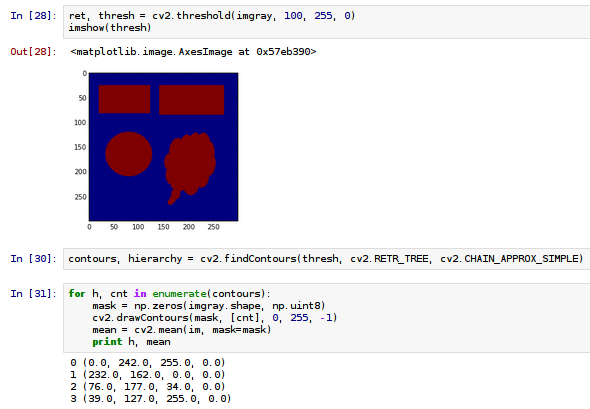
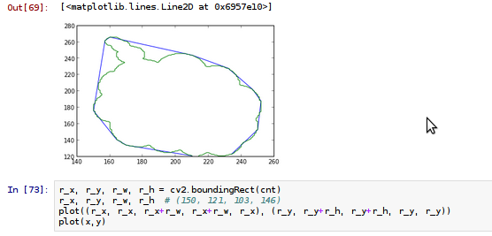
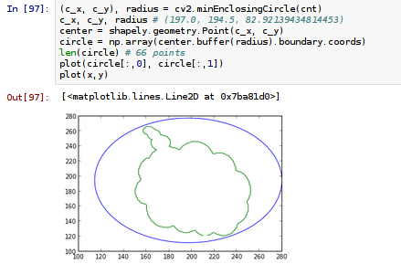
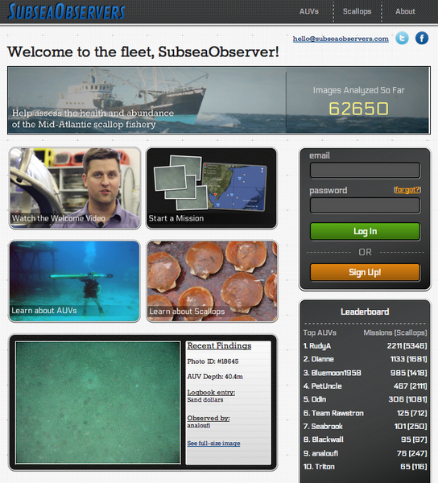
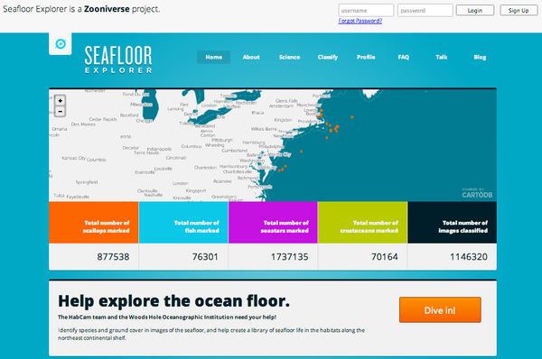
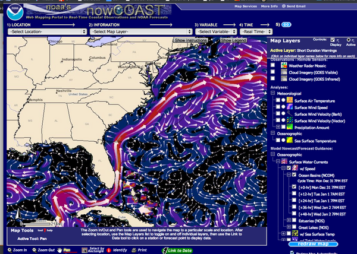

01.31.2013 21:16
IPython Notebook on OpenCV
I just had a little bit of fun with
OpenCV's python interface and an IPython notebook. I haven't posted
much this month, so why not share? It seems like an excellent way
to create tutorials. This notebook shows working through two of
Abid Rahman's OpenCV blog posts on contours:
Contours - 1: Getting Started and
Contours - 2: Brotherhood. Be warned... I have never used
OpenCV before today and I'm working hard on making myself use NumPy
array slicing.
First, download the notebook, uncompress it and then start ipython like this in the same directory:
I wasn't able to quickly make a PDF that looked right, so I'll post a couple screen shots.
First, download the notebook, uncompress it and then start ipython like this in the same directory:
ipython notebook --pylab=inlineopencv-learning.ipynb.bz2
I wasn't able to quickly make a PDF that looked right, so I'll post a couple screen shots.



01.19.2013 19:53
lxml etree iterparse or xpath, xml namespaces, and python generators
I've been going round in circles
trying to parse XML in python for MSL. Everything I've done in the
past has been a nasty hack. Today, I tried to figure out how to
cleanly deal with the namespaces and was foiled. It seems crazy
that lxml doesn't have a something that returns to you the
namespace dictionary. But maybe that isn't even possible. So, in
the past, I've had things like this:
utm_coords = root.xpath('//*/gml:coordinates', namespaces={'gml':"http://www.opengis.net/gml"})[0].text
Ick. I really do not like the whole namespace URL thing. Why does
my code care where the gml spec is? Today, I finally found a way
that you can do xpath searches that ignore the namespace. e.g. If
want to find all the <Node> entries in a document:
et.xpath("//*[local-name()='Node']")
Out[47]: [<Element {RPK}Node at 0x103c9ca50>]
This works fine for small documents. But really I should be using
iterparse to deal with one chunk at a time. Some documents have one
<Node>, but others have 10's of thousands of nodes and
several hundred thousand child nodes. xpath just gets slow. It
turns out that using lxml etree iterparse plus a python generator
makes for compact code that doesn't make my head hurt. I'm sure
it's not the easiest to understand if you are not the author, but
check it out:
from lxml import etree
# This is a python generator... note the "yield"
def RksmlNodes(rksml_source):
for event, element in etree.iterparse(rksml_source, tag='{RPK}Node'):
knots = dict([(child.attrib['Name'], float(child.text)) for child in element])
yield knots
Then if you want to get all the nodes in a file, you can do
something like this:
nodes = [node for node in rksml.RksmlNodes('data/00048/rksml_playback.rksml')]
len(nodes)
nodes[0]
And that gives you something like this:
Out[8]: 20129
Out[9]: {'RSM_AZ': 2.1, 'RSM_EL': 0.321}
And I didn't have to hard code the fields that are the child of
each <Node>. This is all find until somebody changes the
namespace alias in a RKSML file to something other than RPK. In the
past, I would read each file and rewrite it without the
namespace.01.18.2013 12:52
xargs to run commands in parallel
I recently found out xargs had
options to parallelize what it is working on. I finally had a good
reason to try it. I'm processing log files for the last year. Each
day is it's own unique standalone task. My workstation is has 1 CPU
with 6 cores that are hyperthreaded to give 12 logical cores. So...
I asked xargs to run the processing script with 6 day log files and
to run 10 processes in parallel. Zoom!
ls 2012*.tar | xargs -n 6 -P 10 process_log_files.pyThe script takes a tar for the day and outputs a csv. So I am running watch to count the number of csv files I have as a watch to track progress.
watch -n "ls 2012*.csv | wc -l"This will only work for certain limited types of operations, but in the case of my log files, it is a massive speedup of what I am doing. What used to take hours, now runs in about 20 minutes.
01.13.2013 11:51
On what to learn or not learn
I often see people make statements
like they are really glad they are learning awk and sed. Rather
than throw unasked for advice directly at them, I'll give you, the
reader of my blog, advice that you didn't ask for. Rambling
opinions follow as I procrastinate another task.
First, awk, sed, etc are super powerful and time tested tools. But if you are not already an ace at them, I encourage you to not learn them or if you must, learn to read them. But do not waste your time learning them. Your time available to learn skills is limited, so spend it jealously. You could be learning and using perl, or better yet, python. Yes, sed and awk are the kings of one liners, but they are just not worth your time. If you stumble into older code, you may have to learn them, but don't add to the global pool of code that uses them. Open up an ipython shell or use the iPython Notebook mode. You can to everything that is possible in in sed, awk etc in a more modern language and you will be increasing your skill in a much more capable skill. I feel less that way about grep, but really, just get yourself kodos, turn on the verbose mode so you can have multiline regular expressions, and you will be setting yourself up for amazing text parsing power that really much useable than awk and sed. If you use named fields and the groupdict() call, you can access fields by name. And if a regex is too much, python has all kinds of nice string searching and manipulation methods.
The example that triggered this was trying to rename a directory full of files. Normally, that's not worth much of a post, but this particular list of files was trouble. It was foo.xyz_bar.xyz and 1.xyz_2.xyz. How to get rid of that internal .xyz?
What you learn first and what you spend large amounts of time on influences how you see the world. Python has awesome libraries for tons of tasks and is free (you don't have to buy it and some corporation can't take it away). So please, don't spend your first time or the majority of your time with tools like sed and awk. The same goes for Fortran, Matlab, and IDL. Your brain is more valuable than that.
If you are going to learn a set of tools for general scientific computation, I highly recommend starting with python and using git for version control. I wish I had started there. My progression was HP Terminal Basic, MS Basic, Pascal, Fortran, C (lots and lots of C), 68k assembler (and later a few other assembly languages), csh, C++, ML, LISP, Ada, Prolog, GNU Make, Arc Macro Language, Verilog, Matlab, Tcl, IDL, Python, bash, Java, sed/awk, SQL and then a zillion other things. I'm part computer scientist, so I do just like to play with languages (yeah, I'm way too entertained by GNU Make). And languages like Perl and JavaScript are things that I often see, but don't do much more than skim them when needed.
When I watch people who learn better languages first, I am jealous of how they develop good habits right from the start. They see that life doesn't have to be painful and the some languages just easier to use and maintain code in than others, especially for certain tasks. You can write a graphical interface in Fortran (I did it), but you don't want to.
So if you aren't going to be a computer scientist, pick a good all around language that can stick with you throughout your career even if you use some other language for most of your "primary work." I think python is an excellent choice. Languages like sed, awk, fortran, and matlab/octave are particular bad languages for this.
And if you really get into heavy lifting with data, please do yourself and your collaborators a favor and take the first 2 or 3 classes in computer science. You'll learn about linked lists, binary search, and other basics of datastructures that will change how you approach data. I have many times shown a very senior professor in geophysics that their "hard" computational problem is not actually hard if you have the correct data structure.
And learn and git for your revision control system. Even the smallest code bits belong checked in to something.
First, awk, sed, etc are super powerful and time tested tools. But if you are not already an ace at them, I encourage you to not learn them or if you must, learn to read them. But do not waste your time learning them. Your time available to learn skills is limited, so spend it jealously. You could be learning and using perl, or better yet, python. Yes, sed and awk are the kings of one liners, but they are just not worth your time. If you stumble into older code, you may have to learn them, but don't add to the global pool of code that uses them. Open up an ipython shell or use the iPython Notebook mode. You can to everything that is possible in in sed, awk etc in a more modern language and you will be increasing your skill in a much more capable skill. I feel less that way about grep, but really, just get yourself kodos, turn on the verbose mode so you can have multiline regular expressions, and you will be setting yourself up for amazing text parsing power that really much useable than awk and sed. If you use named fields and the groupdict() call, you can access fields by name. And if a regex is too much, python has all kinds of nice string searching and manipulation methods.
The example that triggered this was trying to rename a directory full of files. Normally, that's not worth much of a post, but this particular list of files was trouble. It was foo.xyz_bar.xyz and 1.xyz_2.xyz. How to get rid of that internal .xyz?
#!/usr/bin/env python
import glob
import os
for filename in glob.glob('*.xyz*.xyz'):
# Replace the first occurance with an empty string
newname = filename.replace('.xyz', '', 1)
os.rename(filename, newname)
Yeah, I know that's not a one liner, but it's easy to read. And if
you work inside of ipython and turn on logging, you will have a
record of it. Yes, there are ways to turn this into a one liner,
but at the sacrifice of clarity.What you learn first and what you spend large amounts of time on influences how you see the world. Python has awesome libraries for tons of tasks and is free (you don't have to buy it and some corporation can't take it away). So please, don't spend your first time or the majority of your time with tools like sed and awk. The same goes for Fortran, Matlab, and IDL. Your brain is more valuable than that.
If you are going to learn a set of tools for general scientific computation, I highly recommend starting with python and using git for version control. I wish I had started there. My progression was HP Terminal Basic, MS Basic, Pascal, Fortran, C (lots and lots of C), 68k assembler (and later a few other assembly languages), csh, C++, ML, LISP, Ada, Prolog, GNU Make, Arc Macro Language, Verilog, Matlab, Tcl, IDL, Python, bash, Java, sed/awk, SQL and then a zillion other things. I'm part computer scientist, so I do just like to play with languages (yeah, I'm way too entertained by GNU Make). And languages like Perl and JavaScript are things that I often see, but don't do much more than skim them when needed.
When I watch people who learn better languages first, I am jealous of how they develop good habits right from the start. They see that life doesn't have to be painful and the some languages just easier to use and maintain code in than others, especially for certain tasks. You can write a graphical interface in Fortran (I did it), but you don't want to.
So if you aren't going to be a computer scientist, pick a good all around language that can stick with you throughout your career even if you use some other language for most of your "primary work." I think python is an excellent choice. Languages like sed, awk, fortran, and matlab/octave are particular bad languages for this.
And if you really get into heavy lifting with data, please do yourself and your collaborators a favor and take the first 2 or 3 classes in computer science. You'll learn about linked lists, binary search, and other basics of datastructures that will change how you approach data. I have many times shown a very senior professor in geophysics that their "hard" computational problem is not actually hard if you have the correct data structure.
And learn and git for your revision control system. Even the smallest code bits belong checked in to something.
01.04.2013 12:42
Citizen science - get involved with the ocean
Need a new years resolution? Why not
make a resolution that is easy to follow through on? Get involved
with science! It's easy. You can do it from home. On your desktop
or laptop. You don't need a diver certification or to get wet. No
science degree required. Humans come with some pretty awesome
built-in science analysis equipment.
My good friend Art Trembanis has SubseaObservers where you can help them identify scallops on the sea floor. This stuff is really important. The results will help human's protect the sea and understand how to manage critical resources in the ocean. These images from an Autonomous Underwater Vehicle (AUV) have a lot more than just scallops. What else can you discover?
Last week, I got to sit down with Richard Taylor of the GeoHab project. GeoHab uses a sled with cameras towed behind a ship. More cool imagery and another project where anyone can lend a hand: Seafloor Explorer.
My good friend Art Trembanis has SubseaObservers where you can help them identify scallops on the sea floor. This stuff is really important. The results will help human's protect the sea and understand how to manage critical resources in the ocean. These images from an Autonomous Underwater Vehicle (AUV) have a lot more than just scallops. What else can you discover?

Last week, I got to sit down with Richard Taylor of the GeoHab project. GeoHab uses a sled with cameras towed behind a ship. More cool imagery and another project where anyone can lend a hand: Seafloor Explorer.

01.02.2013 10:06
eNavigation and the breaking of molds
Welcome to 2013. I have probably said
all of this in writing before, but why not say it again? There is a
small discussion on the eNavigation linked in group. I worry that
so many in the maritime industry think ECDIS is a big wonderful
thing and the true answer. Ask yourself, "What if every mariner
started with Google Glass as a student and then had hands free
navigation capabilities that followed them. On the bridge, on the
bridge wing, on the bow, or where ever that mariner needed to be.
That interface could completely shift as the tasks change. Why do
we use the same ECDIS when docking as steaming across an entire
ocean or dredging or retrieving scientific gear from the sea floor
with cm accuracy?
Rex, So, currently, it takes at least a 100 hours of active/indepth experience on a new interface to be any good at it and probably several hundred hours to be really good. And typically, most users have no idea really makes a good or bad interface beyond the little annoying things. Typical user studies can not take statistically significant number of users through multi-hundred hour time series across multiple different interface types and in different orders (what you learn first can stunt your learning of different interaction styles) Top that off with my experience with NOAA, I found that they explicitly ignored that medium to small mariners when creating nautical publications. I taught graduate students how to use the Linux command line last year to process data. I think they all hated me for the first 1-2 months of the class. The looks on many of the faces said "This professor is a stupid jerk." At the end of the semester, I got amazing positive feedback. It was only after I broke some long time pre-conceptions that I could physically see the students make it through to the understanding. I conclude from my observations and studies that we have no bloody clue what is a really good interface for any particular job on or related to ships. To see what I mean, give any 40+ year old (this includes me) an XBox controller and put them in Halo competing agains 8 other people. I did it... I had 12 years laughing at me and kicking my butt for a long long time. The tasks and awareness of multiple indicators is impressive. Only after a huge number of hours, can I hold my own and say that the interface feels extremely intuitive. And simple may or may not equal 2D for a particular job. Want a concrete example? Look at studies of current and wind flows (publications by Colin Ware and others). Put a dot on a wind barb map and test beginners to experts at rapidly judging where that dot will end up... the experts are better that the beginners, but the results are not overwhelmingly good. Then switch to a cognitively driven flow visualization and the results for beginners and experts jump way way up. e.g. see http://nowcoast.noaa.gov in the Oceanographic -> Surface Water Currents -> w/ Speed. Another example, compare training an new ECS system vrs the Whale Alert iPhone/iPad app. The first caused much confusion. The later won me comments like "Why are you bothering to train me? This is trivially easy." Please open your mind up to domain / task specific interfaces, 2D/3D/1D/table interface choices, and the maritime workers who have yet to enter the field.
Iteration is certain fine, but... Dear maritime community, please go forth and innovate. GPS and ECDIS are not the "new hotness." They are now in the old, slow moving work horse phase of their existances. Pick up an XBox, Wii, PS3, smart phone, and tablet and see what's out there. If you don't code, use paper and pencil... draw that radical new idea. I draw on real physical paper and white boards all the time and I'm a coder.
If you can, go take Stanford's ME 101: Visual Thinking class or something similar at a nearby school. Yeah, this class is near impossible to get in. I had to sleep out in line overnight as an undergrad to get in (at a school that typically doesn't have signups for classes, you just go). This will flip your concepts of interacting with the world upside down and inside out.
Intersting... the maritime world finally discovers what the tech world did a long time ago: conferences on a cruise ship. Floating 2013 e-Navigation Conference. Captive audience. Literally
And a followup since someone just responded back. This is why the community is stuck in the mud so-to-speak.
from Rex Kurt, I try to keep things simple. If the customer wants a 3D display, then we will develop a 3D display, but the only marine navigators who currently ask for a a 3D display are submariners (who can change the depth of their vessel). Surface ships are shackled to the sea surface and their navigators seem to prefer a 2D display. It keeps things simple and helps them analyse the (2D) problem and avoid collisions and groundings.There are so many things wrong out the current way things are done. Starting with ECDIS alarms and moving forward to an endless list.
Rex, So, currently, it takes at least a 100 hours of active/indepth experience on a new interface to be any good at it and probably several hundred hours to be really good. And typically, most users have no idea really makes a good or bad interface beyond the little annoying things. Typical user studies can not take statistically significant number of users through multi-hundred hour time series across multiple different interface types and in different orders (what you learn first can stunt your learning of different interaction styles) Top that off with my experience with NOAA, I found that they explicitly ignored that medium to small mariners when creating nautical publications. I taught graduate students how to use the Linux command line last year to process data. I think they all hated me for the first 1-2 months of the class. The looks on many of the faces said "This professor is a stupid jerk." At the end of the semester, I got amazing positive feedback. It was only after I broke some long time pre-conceptions that I could physically see the students make it through to the understanding. I conclude from my observations and studies that we have no bloody clue what is a really good interface for any particular job on or related to ships. To see what I mean, give any 40+ year old (this includes me) an XBox controller and put them in Halo competing agains 8 other people. I did it... I had 12 years laughing at me and kicking my butt for a long long time. The tasks and awareness of multiple indicators is impressive. Only after a huge number of hours, can I hold my own and say that the interface feels extremely intuitive. And simple may or may not equal 2D for a particular job. Want a concrete example? Look at studies of current and wind flows (publications by Colin Ware and others). Put a dot on a wind barb map and test beginners to experts at rapidly judging where that dot will end up... the experts are better that the beginners, but the results are not overwhelmingly good. Then switch to a cognitively driven flow visualization and the results for beginners and experts jump way way up. e.g. see http://nowcoast.noaa.gov in the Oceanographic -> Surface Water Currents -> w/ Speed. Another example, compare training an new ECS system vrs the Whale Alert iPhone/iPad app. The first caused much confusion. The later won me comments like "Why are you bothering to train me? This is trivially easy." Please open your mind up to domain / task specific interfaces, 2D/3D/1D/table interface choices, and the maritime workers who have yet to enter the field.
Iteration is certain fine, but... Dear maritime community, please go forth and innovate. GPS and ECDIS are not the "new hotness." They are now in the old, slow moving work horse phase of their existances. Pick up an XBox, Wii, PS3, smart phone, and tablet and see what's out there. If you don't code, use paper and pencil... draw that radical new idea. I draw on real physical paper and white boards all the time and I'm a coder.
If you can, go take Stanford's ME 101: Visual Thinking class or something similar at a nearby school. Yeah, this class is near impossible to get in. I had to sleep out in line overnight as an undergrad to get in (at a school that typically doesn't have signups for classes, you just go). This will flip your concepts of interacting with the world upside down and inside out.

Intersting... the maritime world finally discovers what the tech world did a long time ago: conferences on a cruise ship. Floating 2013 e-Navigation Conference. Captive audience. Literally
And a followup since someone just responded back. This is why the community is stuck in the mud so-to-speak.
Kurt, I have to agree with Rex. Mariners on surface ships only work in 2D. I have seen electronic maps showing soundings in 3D. My first thought was WOW this looks great, but when I got over my initial reaction, I realised that it wasn't in fact needed, all the 3D information is already shown on the chart. The echo sounder can confirm the current sounding (with tidal allowances of course) and the rest is down to the OOW's training and intelligence. Just about the only time ordinary mariners work in 3D is when anchoring. Even then, I don't think 3D is necessary, after all we have been doing it with 2D charts for many hundreds of years. Posted by James MansonAnd that response by James is exactly why eNavigation is going to suck.